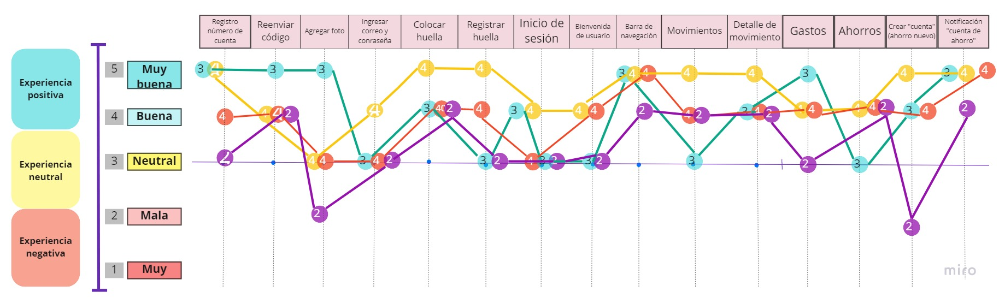
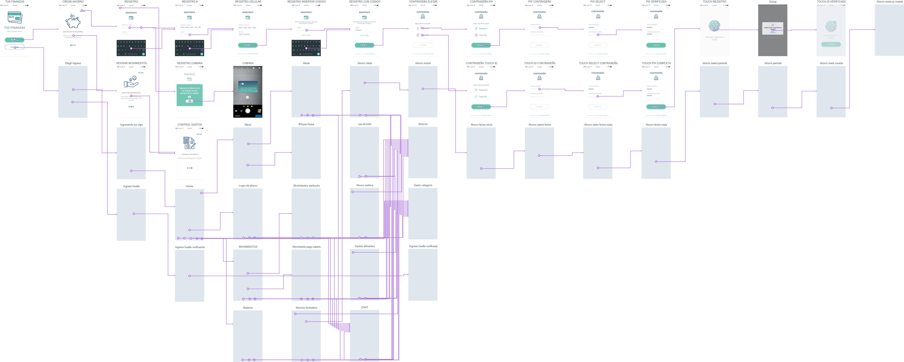
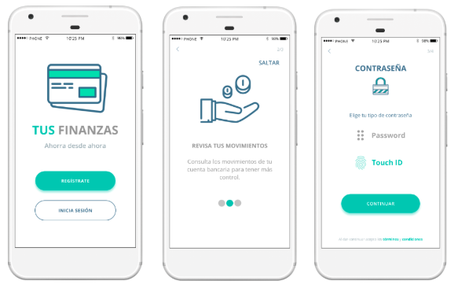
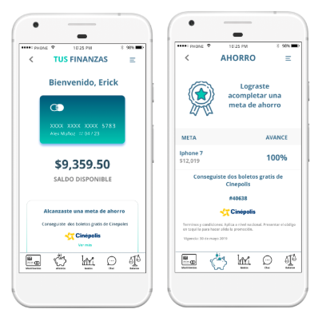
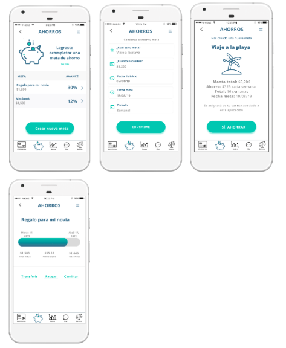

Tus Finanzas
Objetivo del proyecto
Uno de los bancos más importantes del país ha lanzado una nueva aplicación móvil al mercado para que sus usuarios puedan visualizar sus gastos mensuales y fomentar el ahorro. Luego de tener algunos meses en el mercado, el equipo detrás de este nuevo producto me eligió como líder de UX para ayudarles a definir la dirección y la evolución del producto. El proyecto consiste en hacer un diagnóstico, evaluar el desempeño de la aplicación y proponer los cambios necesarios para optimizar el producto.
Contexto del problema
Durante el primer sprint se tuvo la entrevista con la Product Manager del proyecto quien nos brindó el contexto de la aplicación. Se identificaron los siguientes aspectos:
Pains
- La aplicación sólo está disponible para iOS.
- Los usuarios no se registran en la aplicación.
- Los usuarios ingresan sólo a la sección de gastos.
Gains
- Las impresiones en Facebook Ads incrementaron de febrero a julio.
- La aplicación se puede vincular con las tarjetas del banco.
- La aplicación tiene como medida de seguridad el touch ID.
- Facilita la visualización de salud financiera y metas de ahorro.
- El banco permite retirar el dinero ahorrado.
Benchmark
Los principales competidores de la aplicación corresponden a la banca tradicional y digitalmente nativas. Para encontrar áreas de oportunidad se analizó a 10 bancos (nacionales, internacionales) para conocer su target, beneficios, proceso de registro, medidas de seguridad, contenido, en qué dispositivos están disponibles, gains y pains.
Análisis de la data
Durante los seis meses que la aplicación ha estado disponible se recabo data correspondiente a Ads y el uso del MVP. Con base en ellos realice el análisis de la información .
Campaña en Facebook
- Las impresiones en Facebook presentan un incremento del 47% de febrero a julio.
- El promedio de impresiones de febrero a julio fue de 77M, sin embargo solo se obtuvo un promedio de 29M instalaciones y 3K registro, por lo que la campaña en Facebook no presenta una captación positiva de nuevos usuarios.
Landing Page
- El 89% de los usuarios ingresan a la landing page a través de dispositivos Android y el 4% ingresa por dispositivos iOS, por lo que es recomendable realizar un diseño para dispositivos Android.
- La tasa de rebote es mayor en dispositivos Android con un promedio de 77.19% mientras que en iOS fue del 70%.
- El usuario que ingresa a la aplicación en Androide, dura en promedio 1:43 minutos; mientras quien lo hace con iOS el tiempo es de 2:31 minutos. El comportamiento se debe a que la aplicación está diseñada para iOS haciendo que la navegación para otros dispositivos sea más complicada.
Comportamiento en la aplicación
- Las sesiones de febrero a julio incrementaron 55% con un promedio de 200K sesiones al mes y 7K al día.
- El promedio de dispositivos activos de iPhones de febrero a julio es de 8.1K y el promedio de sesiones de 7.2K, es decir, 12.5% de los dispositivos no realizan inicio de sesión.
Análisis Heurístico
La interfaz de la aplicación Tus Finanzas fue sometida a un análisis de usabilidad y procesos con base en los principios de Jakob Nielsen. Los touchpoints que se tomaron en cuenta fueron pagina de carga, registro, inicio de sesión, home, gastos, ahorros, movimientos. Los principales pains fueron:
- Registro: La aplicación no indica cuál es su objetivo. Falta mensaje de que se está procesando la huella; el agregar una fotografía de perfil es confuso, no hay una consistencia en el idioma y en el diseño de los elementos (principalmente en los botones). El usuario no puede ver términos y condiciones.
- Inicio de sesión: Inconsistencia en el idioma, falta de elementos para el reconocimiento en sección.
- Home: No es posible cerrar sesión, faltan elementos para el reconocimiento en sección, el menú tiene una mala distribución de los elementos y formato al reducir espacio de la pantalla. Carece de sección de contacto y ayuda.
- Gastos: Falta información para saber en qué sección el usuario está ubicado. Inconsistencia en la paleta de color. No hay un desglose detallado de la información mostrada.
- Ahorro: La pantalla se queda en blanco y no informa al usuario que su acción está siendo procesada. Inconsistencia en el color. El botón de crear cuenta no está en la sección esperada y la instrucción es confusa. El formulario no tiene información de cómo llenarlo.
- Movimientos: El botón del menú se queda a la mitad de la pantalla al dar scroll. No presenta información de notificaciones para reconocer cargos. Falta información para saber en qué sección el usuario está ubicado.
Testing del MVP
El prototipo navegable fue testeado con 33 usuarios con base en las dos user personas que el cliente me compartió. En total fueron 15 mujeres y 18 hombres con una edad promedio años. El 75% contaba con Androide. El 72% estaba trabajando. Las principales observaciones del testeo fueron:
Pains
- Confusión en poder seleccionar la foto de perfil y terminar la tarea.
- No cuentan con la posibilidad de realizar pagos y transferencias
- El botón de crear cuenta es confuso tanto en su ubicación, y objetivo del mismo.
- El menú del perfil no tiene información de valor.
- La tarjeta no se puede bloquear desde la aplicación.
- Faltan predicciones.
- En la sección de ahorro no pueden conocer la cantidad bruta que llevan ahorrada.
- En la sección de ahorro no pueden conocer la cantidad bruta que llevan ahorrada.
- Buscan un método de contraseña más segura.
- El botón redondo del menú fijo no tiene una funcionalidad clara.
- En las secciones falta desglosar fechas.
- Los ahorros no se pueden editar manualmente.
- La app no tiene alerta de movimientos.
Gains
- Navegación intuitiva.
- Registro sencillo.
- Buen diseño.
- La idea de poder generar una meta de ahorro automático es de gran valor.
- La huella de seguridad es una buena opción.
- Los pasos de sesión les da confianza y seguridad, sin embargo la perspectiva es con base en experiencia previa con el modelo de seguridad de los bancos.
Coustomer Journey Map
Con la intención de conocer los sentimientos, las emociones y las experiencias de los usuarios entorno a los diferentes momentos de la aplicación se realizó un coustomer journey map. Los resultados arrojaron que los usuarios presentan más dificultad de navegación en el apartado de agregar una fotografía para el perfil y crear una cuenta de ahorro.
User persona
El user persona se estableció con base en los ejes de comportamiento y arquetipos.

Segundo sprint
Los objetivos de la segunda iteración se basan en generar una propuesta de rediseño con base a la información recabada en el primer sprint, el prototipado del rediseño, realizar pruebas de usabilidad y establecer los siguientes pasos.
Reto de diseño
La propuesta de rediseño consiste en mejorar el flujo de navegación, modificar el diseño de elementos visuales que no mantienen una consistencia y mostrar información desglosada de las diferentes secciones de la app.
Mockups
Los mockups de la aplicación pueden ser consultados aquí.
Prototipado
El rediseño de la aplicación "Tus Finanzas" se realizó en Figma, mientras que el flujo de navegación se ejecutó en Marvel.
Primer testing
La aplicación se mostró a tres personas para evaluar el diseño de Home para identificar si el contenido era claro y si los iconos del navegador fijo eran entendibles. Como resultado, los usuarios indicaron que en la pantalla de inicio había mucha información, mostraron confusión ya que la información era interpretada como botones y como un navegador extra al existente, por tal motivo se eliminó el exceso de información. Asimismo, los iconos del navegador eran confusos por tal motivo se incluyó el título de cada uno para identificarlos con mayor rapidez las secciones. El gain fueron los iconos del menú de navegación por ser simples y de fácil lectura.

Primera iteración
El rediseño de la aplicación tuvo una primera iteración con base en los hallazgos antes mencionados. Consultar el prototipo en el link.
Segundo testing
La aplicación fue testeada con cinco personas. Los usuarios destacaron que el diseño es de fácil navegación y sencillo; el inicio de sesión es ágil, los iconos son amigables, los detalles de los movimientos representan valor agregado, el contenido es de valor y lograron cumplir las tareas asignadas de forma rápida. Los pains corresponden a uso de tecnicismos, realizan clic en la tarjeta de home esperando mostrar información adicional, desean tener la oportunidad de consultar su estado de cuenta y hace falta un apartado que indique cuándo hay que pagar.
Prototipo de alta fidelidad
El rediseño de la aplicación tuvo una primera iteración con base en los hallazgos antes mencionados.
Flujo de la información
El copy de la aplicación se cambio por transmitir un mensaje más claro “Ahorra desde ahora”. Al comenzar el registro se muestran tres slides con los objetivos principales de la aplicación en tono informativo. Las medidas de seguridad implementadas son dos, password y touch ID las cuales pueden ser elegidas acorde a las preferencias y diseño de su dispositivo.
El home de la aplicación muestra el saldo disponible en la tarjeta y el estatus de sus metas de ahorro. Por cada meta cumplida se le otorgará al usuario un incentivo de entretenimiento para continuar ahorrando.
El usuario tiene la posibilidad de ver los detalles de sus movimientos como ubicación, fecha y tipo de operación.

La sección de ahorro ubica de manera estratégica el botón de crear nueva meta. El formulario para crear una meta de ahorro tiene instrucciones en los imput para ir dirigiendo al usuario. El usuario tiene el control de sus metas en todo momento ya que puede conocer el estatus, tener la opción de transferir, editar y pausarla.
Las secciones adicionales que se incluyeron fue un chat para tener una comunicación directa con servicio a cliente, una sección de balance de su salud financiera.